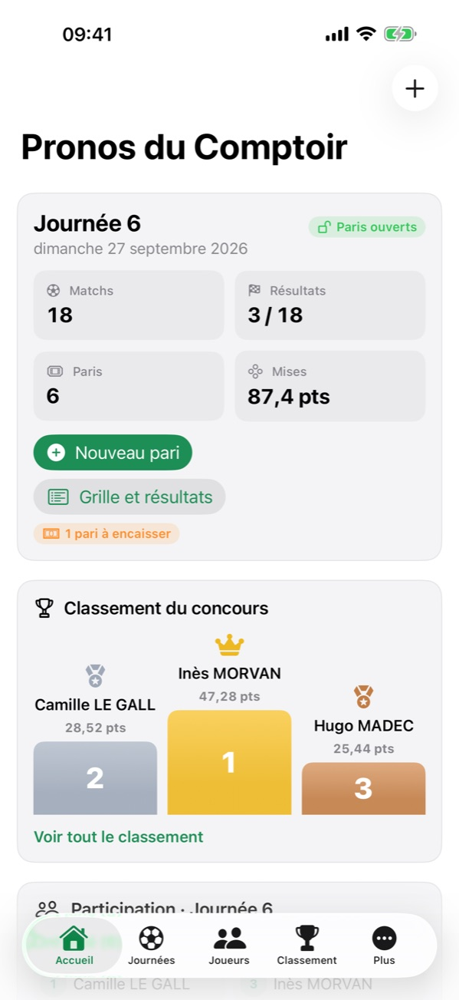
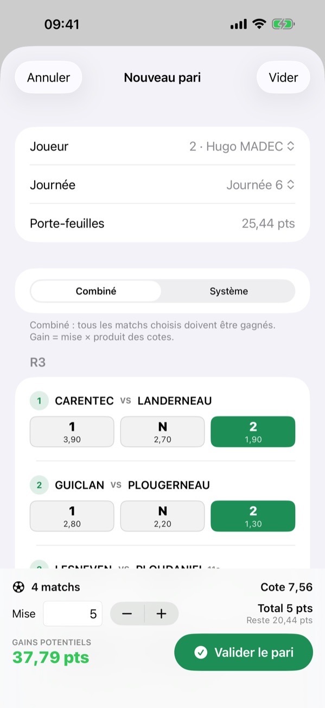
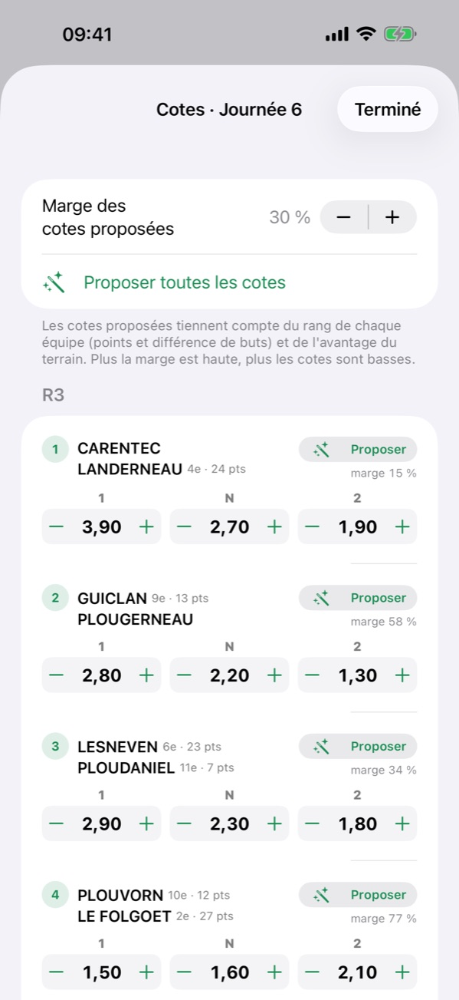
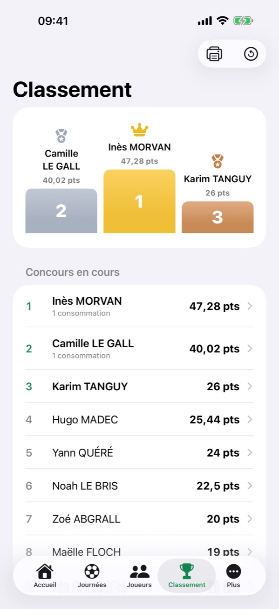
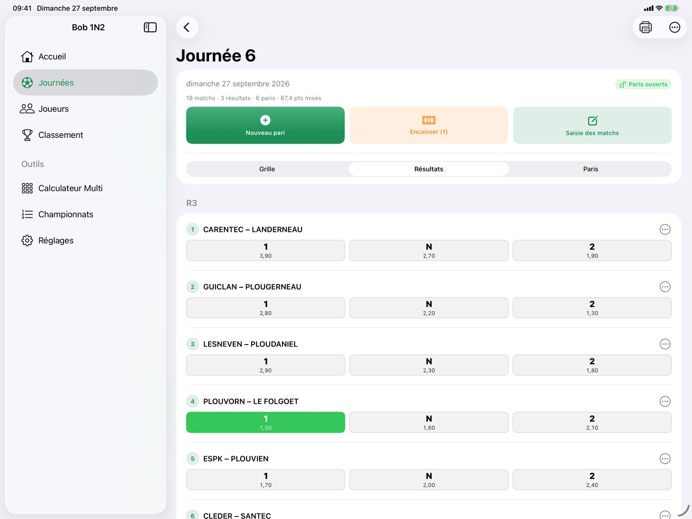

BOB 1N2
BOB 1N2Une grille de matchs, des cotes 1 N 2, des points. Bob 1N2 organise le concours de pronostics de votre café, de votre club ou de votre bande d'amis : chacun mise ses points sur les matchs du week-end, les gains s'ajoutent à son porte-feuilles et le classement suit. Pour iPhone et iPad.




La grille de la semaine
- Les matchs et leurs cotes — domicile, extérieur, cotes 1, N et 2, regroupés par division (R1, R3, D3…) comme sur votre feuille de saisie.
- ① Les matchs pour les paris, en un geste — ouvrez la page de votre compétition dans le navigateur de l'application : les matchs de la prochaine journée s'ajoutent à la grille, cotes proposées. Plusieurs compétitions peuvent se suivre dans la même journée.
- Vos propres compétitions — coupe du bar, tournoi, district absent du site : un nom, des équipes, puis chaque match choisi dans la liste. Les rangs suivent les résultats saisis.
- Ou à la main — un match par ligne, « Équipe A - Équipe B 1,8 3,2 4 », cotes comprises.
- La semaine suivante déjà prête — une nouvelle journée reprend les matchs de la précédente : il ne reste qu'à corriger ce qui change.
- Une grille à cocher — imprimée en A4, avec une case devant chaque cote, pour ceux qui préfèrent le papier.
Les paris
- Le combiné — on touche 1, N ou 2 sur les matchs choisis ; gain = mise × produit des cotes, affiché avant de valider.
- Le système — de 3 à 8 matchs, avec les combinaisons « 2 sur n », « 3 sur n »… jusqu'au Goliath et ses 247 combinaisons : quelques erreurs sont permises.
- Une mise jamais au-delà du porte-feuilles, et un ticket à imprimer ou envoyer.
- Le jeu à distance — envoyez la grille en lien ou en QR code : chacun coche la sienne sur son téléphone, sans l'application, et vous la renvoie. Vous choisissez le joueur, vérifiez la mise et validez avec le code barman.
- Le rang des équipes — il vient avec les matchs importés, s'affiche à côté de chaque équipe au moment de parier et sert à proposer les cotes.
Les cotes, sans calculette
- Proposées d'après le rang des équipes — points et différence de buts de chaque équipe, avantage du terrain, et la marge que vous choisissez : plus elle est haute, plus les cotes sont basses.
- Ajustées d'un doigt — un appui sur − ou + pour chaque cote, et la marge de chaque match affichée pour garder une grille cohérente.

Résultats et encaissement
- ② Les résultats — de retour sur la page de la compétition, un geste pose les scores sur les bons matchs. Ou un appui sur l'issue gagnante de chaque match. Un match annulé compte pour une cote de 1.
- Chaque ticket se met à jour match par match : en cours, perdu, à encaisser.
- Tous les paris terminés s'encaissent d'un geste, validé par le code barman : les clients peuvent parier eux-mêmes sur l'iPad du comptoir, seul le barman crédite les points.
Le porte-feuilles et le concours
- Chaque joueur a son porte-feuilles et l'historique de tous ses mouvements.
- Points de fidélité — chaque consommation payée au comptoir peut rapporter des points, au taux que vous réglez (1 point par euro, 5 points par tranche de 10 €…).
- Consommations offertes contre des points, au prix de chacune (10 points pour 1 € par défaut, réglable) ; rajout de points, correction : chaque opération du barman est tracée.
- Un podium et un classement à afficher ou imprimer ; un nouveau concours remet les compteurs à zéro et garde le podium au palmarès.
- Le calculateur Multi, pour voir ce que rapporte un système avant de le jouer.
Des points, jamais d'argent
Bob 1N2 ne manipule aucun argent : pas de mise en euros, pas de paiement, pas d'achat dans l'application. Les points sont virtuels ; c'est l'organisateur du concours qui décide comment on les obtient et ce qu'ils valent. Apple n'est ni organisateur, ni partenaire des concours tenus avec l'application.
Sans rien de superflu
Pas de compte, pas de publicité, aucune donnée collectée. Joueurs, grilles et paris restent sur votre appareil. L'application ne va chercher aucune page d'elle-même : son navigateur intégré affiche le site de résultats que vous ouvrez, sans en garder les cookies, et ne retient de la page affichée que ce que vous importez. Le jeu à distance passe par de simples liens : ni serveur, ni compte.